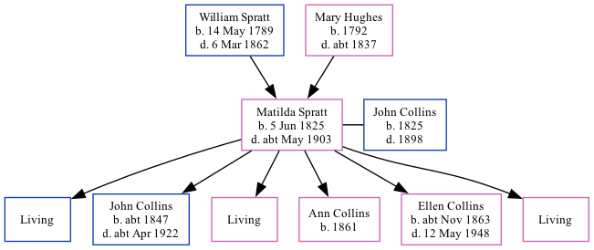

Matilda Collins (née Spratt) 1825 - c1903
[ Home ] | [ Calendar ] | [ Surnames Index ] | [ Family History ]The daughter of William Spratt (a laborer) and Mary Hughes, Matilda Spratt, the three times great-aunt of <a href="I1.html">Nigel Horne</a>, was born in St Nicholas-at-Wade, Kent, England on Jun 5, 1825<span class="citation">1,2,3,4,5,6,7,8</span> and married John Collins (a shepherd with whom she had 6 children: <a href="I2885.html">William</a>, <a href="I1493.html">John Elgar</a>, <a href="I2886.html">Elizabeth Sarah</a>, <a href="I2673.html">Ann</a>, <a href="I1494.html">Ellen Jane</a> and <a href="I1495.html">Ada Louisa</a>, along with 3 surviving children) in St Nicholas-at-Wade on Nov 30, 1844<span class="citation">10</span>.</p><p>Matilda spent all of her life in Kent, England. Throughout her life, she lived in several places around the county: at The Street in St Nicholas-at-Wade on Jun 6, 1841<span class="citation">12</span>; at Reynolds Farm, Chislet, Kent, England on Mar 30, 1851<span class="citation">2</span>; on Prospect Road, Minster, Thanet on Apr 7, 1861<span class="citation">14</span>; at Cottage, Birchington on Apr 2, 1871<span class="citation">15</span>; at Evering Farm, Alkham on Apr 3, 1881<span class="citation">16</span>; at Everden, Alkham on Apr 5, 1891<span class="citation">17</span>; and at Ivy Cottage, Everden, Alkham on Mar 31, 1901<span class="citation">18</span>. <p>She died <i>c.</i> May 1903 in Swingfield, Kent<span class="citation">8,9</span> and was buried there at St Peter's Church, The Street on Jun 23, 1903<span class="citation">11</span>.
Parents
- William was born on May 14, 1789
- Mary was born in 1792
Children
- John Elgar was born c. 1847
- Ann was born in 1861
- Ellen Jane was born c. Nov 1863
Citations
- 1841 England Census Online publication - Provo, UT, USA: The Generations Network, Inc., 2006.Original data - Census Returns of England and Wales, 1841. Kew, Surrey, England: The National Archives of the UK (TNA): Public Record Office (PRO), 1841. Data imaged from the National
- 1851 England Census Online publication - Provo, UT, USA: The Generations Network, Inc., 2005.Original data - Census Returns of England and Wales, 1851. Kew, Surrey, England: The National Archives of the UK (TNA): Public Record Office (PRO), 1851. Data imaged from the National
- 1861 England Census Online publication - Provo, UT, USA: The Generations Network, Inc., 2005.Original data - Census Returns of England and Wales, 1861. Kew, Surrey, England: The National Archives of the UK (TNA): Public Record Office (PRO), 1861. Data imaged from the National
- 1871 England Census Online publication - Provo, UT, USA: The Generations Network, Inc., 2004.Original data - Census Returns of England and Wales, 1871. Kew, Surrey, England: The National Archives of the UK (TNA): Public Record Office (PRO), 1871. Data imaged from the National
- 1881 England Census Online publication - Provo, UT, USA: The Generations Network, Inc., 2004. 1881 British Isles Census Index provided by The Church of Jesus Christ of Latter-day Saints © Copyright 1999 Intellectual Reserve, Inc. All rights reserved. All use is subject to the
- 1891 England Census Online publication - Provo, UT, USA: The Generations Network, Inc., 2005.Original data - Census Returns of England and Wales, 1891. Kew, Surrey, England: The National Archives of the UK (TNA): Public Record Office (PRO), 1891. Data imaged from The National
- 1901 England Census Online publication - Provo, UT, USA: The Generations Network, Inc., 2005.Original data - Census Returns of England and Wales, 1901. Kew, Surrey, England: The National Archives of the UK (TNA): Public Record Office (PRO), 1901. Data imaged from the National
- England & Wales, FreeBMD Death Index: 1837-1915 Online publication - Provo, UT, USA: The Generations Network, Inc., 2006.Original data - General Register Office. England and Wales Civil Registration Indexes. London, England: General Register Office. © Crown copyright. Published by permission of the Cont
- England & Wales deaths 1837-2007 - Findmypast
- England & Wales, FreeBMD Marriage Index: 1837-1915 Online publication - Provo, UT, USA: The Generations Network, Inc., 2006.Original data - General Register Office. England and Wales Civil Registration Indexes. London, England: General Register Office. © Crown copyright. Published by permission of the Cont
- Kent, Canterbury Archdeaconry burials 1538-1988 - Findmypast
- 1841 England, Wales & Scotland Census - Findmypast (was age 15)
- 1851 England, Wales & Scotland Census - Findmypast (was age 26 and the wife of the head of the household)
- 1861 England, Wales & Scotland Census - Findmypast (was age 36 and the wife of the head of the household)
- 1871 England, Wales & Scotland Census - Findmypast (was age 45 and the wife of the head of the household)
- 1881 England, Wales & Scotland Census - Findmypast (was age 55 and the wife of the head of the household)
- 1891 England, Wales & Scotland Census - Findmypast (was age 64 and the wife of the head of the household)
- 1901 England, Wales & Scotland Census - Findmypast (was age 74 and the head of the household)
Media
Kent, Canterbury Archdeaconry burials 1538-1988 - GBPRS/CANT/D/95570642
England & Wales marriages 1837-2008 - BMD/M/1844/4/AZ/000617/029
Kent, Canterbury Archdeaconry marriages 1538-1928 - GBPRS/CANT/M/97245464/2
England & Wales deaths 1837-2007 - BMD/D/1903/2/AZ/000066/232
1891 England, Wales & Scotland Census - GBC/1891/0005975544
1901 England, Wales & Scotland Census - GBC/1901/0004521618
1881 England, Wales & Scotland Census - GBC/1881/0004928689
1841 England, Wales & Scotland Census Transcription - GBC-1841-0013960500
1851 England, Wales & Scotland Census - GBC/1851/0005819379
1861 England, Wales & Scotland Census - GBC/1861/0003518568
Family Tree
Generated by Ged2Site. Last updated on Jul 20, 2025